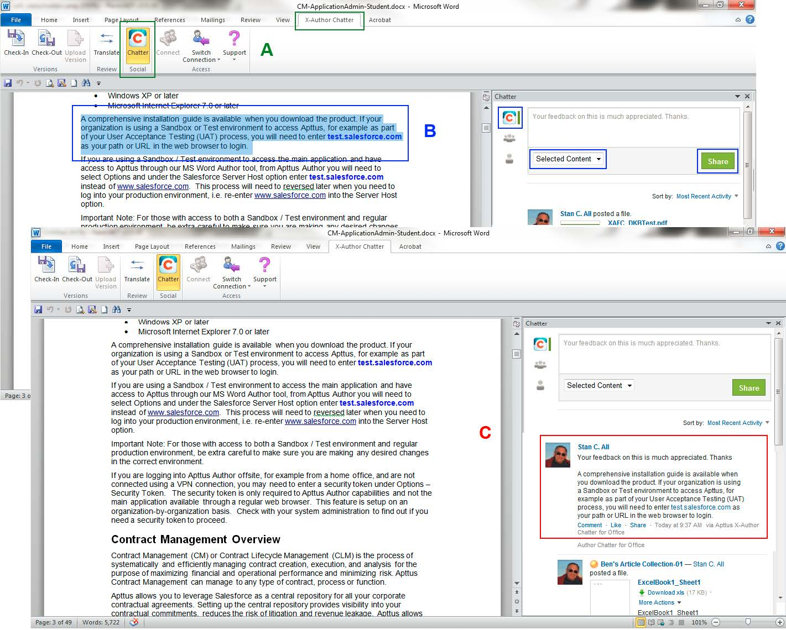

Overview
X-Author Chatter seamlessly combines your Microsoft Office suite and Chatter’s social network capabilities, for sharing and collaborating on documents and projects.
There is no need to login to Salesforce to access your documents and data. It can all be done via the X-Author Chatter ribbon. With the ribbon in your MS Office products you can check-in, check-out, and update the revision of files kept in Salesforce. Ribbon options are also used to display Chatter and the translation tool. Once displayed, the Chatter pane sits alongside your document within the same MS Office window. You can work on your documents and simultaneously engage in a dialog with anyone in your organization from one place. When you do not need Chatter you can close it and re-open it later.

A – Selecting the X-Author Chatter ribbon and then Chatter displays your current feed.
B – Select the text you want to copy, choose who you want to share it with and whether you want to include the whole document, and click Share.
C – The content is included in the Chatter feed and your colleagues can now comment on it.